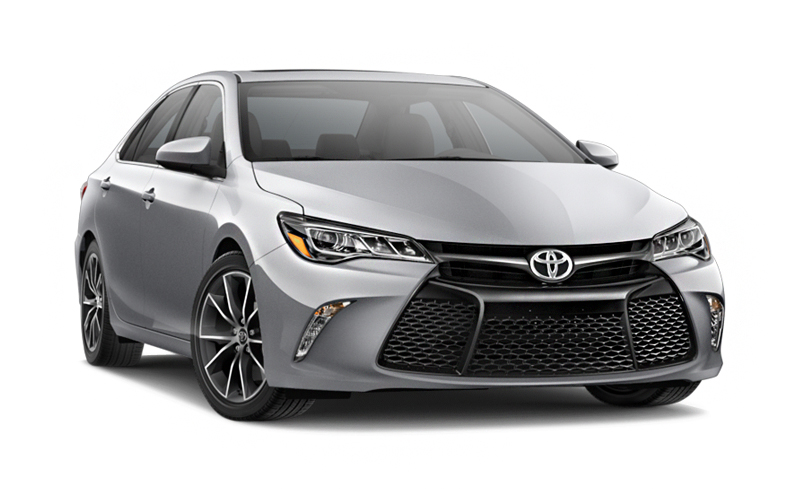
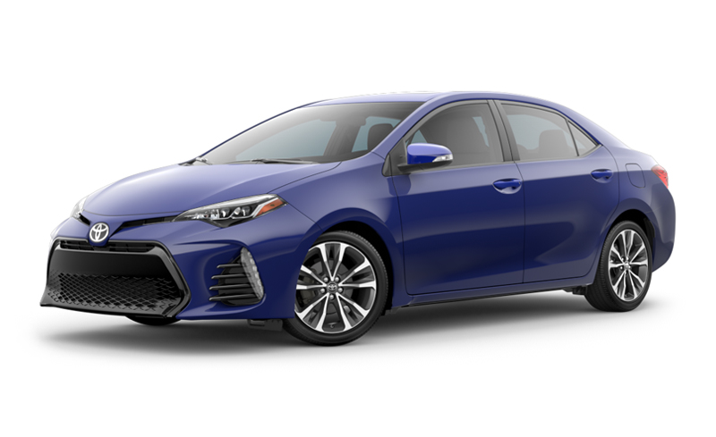
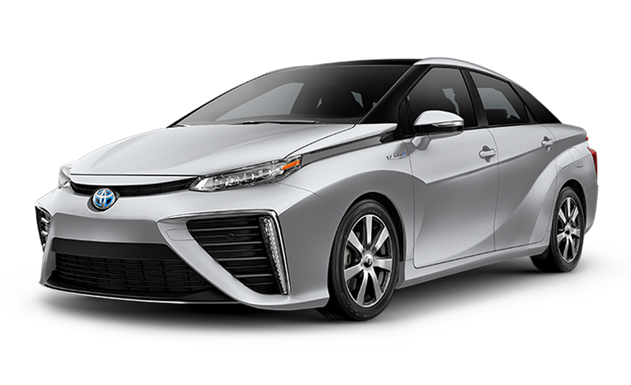
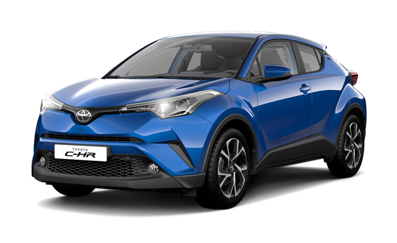

Toyota Camry
The 2017 Camry’s available 268-hp 3.5-liter V-6 engine is powerful and worthy of praise. Its pricing, however, starts north of $30,000, and the V-6 is only available in models packed with luxury items, driving the sticker of this family sedan too high. The efficient, affordable four-cylinder engine in the almost-sporty SE trim level.

Toyota Corolla
The feature-rich Corolla is an exceptional value, but the one feature it doesn’t offer is thrills. A 1.8-liter four-cylinder makes 132 hp—140 hp in the LE Eco model—and drives the front wheels through a six-speed manual or a CVT. A 6.1-inch touchscreen infotainment system with Bluetooth is standard but can be upgraded to a 7.0-inch unit with navigation. All Corollas get modern technology such as adaptive cruise control, lane-keeping assist, automatic high beams, and automated emergency braking.

Toyota Mirai
In Japanese, “mirai” means “future,” and the Mirai is the future of motoring: It runs solely on hydrogen and its only emissions are water. Expected later in 2015, the Mirai initially will be sold or leased just in California, where the infrastructure for hydrogen fueling exists. Range is around 300 miles, refueling will take about five minutes, and fuel is included for the first three years of ownership. The powertrain has an eight-year/100,000-mile warranty to allay early-adopter concerns.

Toyota C-HR
“C-HR” stands for “Coupe High-Rider,” despite this little ute’s having four doors and riding rather low for a crossover. A turbo 2.0-liter four pumps out 144 hp and teams with a CVT. Oddly, the C-HR is front-drive only; all-wheel drive is not an option. Safety tech includes a forward-collision warning system with pedestrian detection and automatic emergency braking, lane-departure warning with steering assist, automatic high beams, and adaptive cruise control. Look for the C-HR in spring 2017.